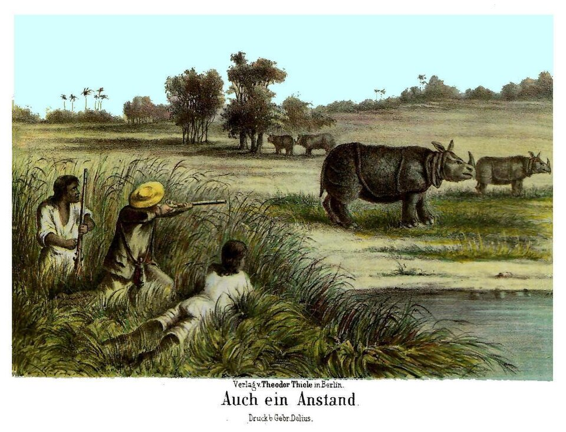
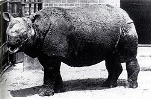

Rinoceronte de Java (Rhinoceros sondaicus)



Estado de conservação: Em perigo crítico (Critically Endangered - CR), segundo a União Internacional para a Conservação da Natureza (IUCN). O rinoceronte-de-java é considerado um dos mamíferos mais raros do planeta e está à beira da extinção.
Habitat: Vive em planícies aluviais, florestas tropicais densas, juncais e canaviais, especialmente em áreas próximas a rios, lagoas e regiões pantanosas. Atualmente, a espécie está restrita principalmente ao Parque Nacional de Ujung Kulon, na ilha de Java, Indonésia, onde encontra abrigo e alimento suficientes para sobreviver.
Alimentação: É um animal herbívoro, alimentando-se de folhas, brotos, galhos jovens, frutos caídos, arbustos, gramíneas e algumas plantas aquáticas e algas. Utiliza seu lábio superior flexível para arrancar a vegetação de que se alimenta.
Principais ameaças:
- Perda e degradação do habitat: Devido ao desmatamento e à expansão das atividades humanas.
- População reduzida: Extremamente vulnerável a surtos de doenças e desastres naturais.
- Baixa diversidade genética: Causada pelo número reduzido de indivíduos restantes.
- Riscos geológicos: Perigo constante de erupções vulcânicas e tsunamis, já que toda a população vive concentrada em uma única região.
- Competição alimentar: Espécies invasoras alteram a vegetação do habitat natural.
- Caça ilegal histórica: A busca por seus chifres ainda representa uma ameaça potencial constante.
Curiosidades do Rinoceronte-de-Java:
- O mais raro do mundo: Restam aproximadamente menos de 50 indivíduos vivendo na natureza.
- Chifre único: Possui apenas um chifre, que geralmente é bem menor do que o das outras espécies.
- Excelente nadador: Adora ficar perto de ambientes aquáticos e nada com facilidade.
- Proteção natural: Chafurdar na lama ajuda a regular sua temperatura corporal e protege a pele contra picadas de insetos.
- Histórico de resiliência: Durante muitos anos, acreditou-se que a espécie já poderia ter desaparecido completamente da natureza.